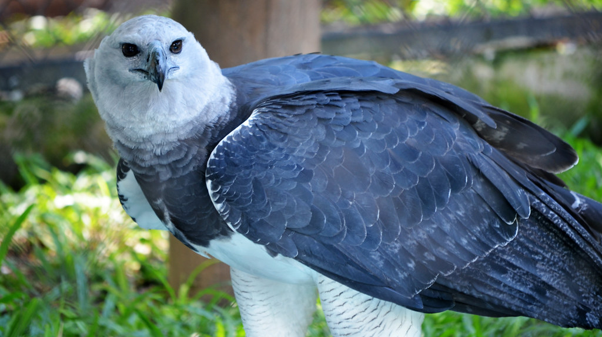
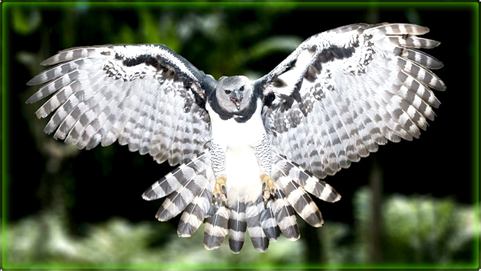

Harpia:
As harpias (em grego, αρπυια) são criaturas da mitologia grega, frequentemente representadas como aves de rapina com rosto de mulher e seios[1]. Na história de Jasão, as harpias foram enviadas para punir o cego rei trácio Fineu, roubando-lhe a comida em todas as refeições[2]. Os argonautas Zetes e Calais, filhos de Bóreas e Orítia, libertaram Fineu das hárpias, que, em agradecimento, mostrou a Jasão e os argonautas o caminho para passar pelas Simplégades[2]. Eneias e seus companheiros, depois da queda de Troia, na viagem em direção à Itália, pararam na ilha das harpias; mataram animais dos rebanhos delas, atacaram-nas quando elas roubaram as carnes, e ouviram de uma das harpias terríveis profecias a respeito do resto da sua viagem.[3]
 Mitologia:
Segundo Hesíodo, as harpias eram irmãs de Íris, filhas de Taumante e a oceânide
Electra, e seus nomes eram Aelo (a borrasca), Celeno (a obscura) e Ocípete (a rápida no voo)[4].
Higino lista os filhos de Taumante e Electra como Íris e as harpias,
Celeno, Ocípete e Aelo[5], mas, logo depois, dá as harpias como
filhas de Taumante e Oxomene[1].
As harpias são referidas na Eneida de Virgílio como residindo nas Estrófades,
um pequeno arquipélago do mar Jónico,[6] à entrada do Orcus,[7] ou numa gruta
em Creta, por Apolónio.[8]
Tipos de Harpias:
- Gritadeira
- Marcial
- Águia-malaia
- Águia-imperial-ibérica